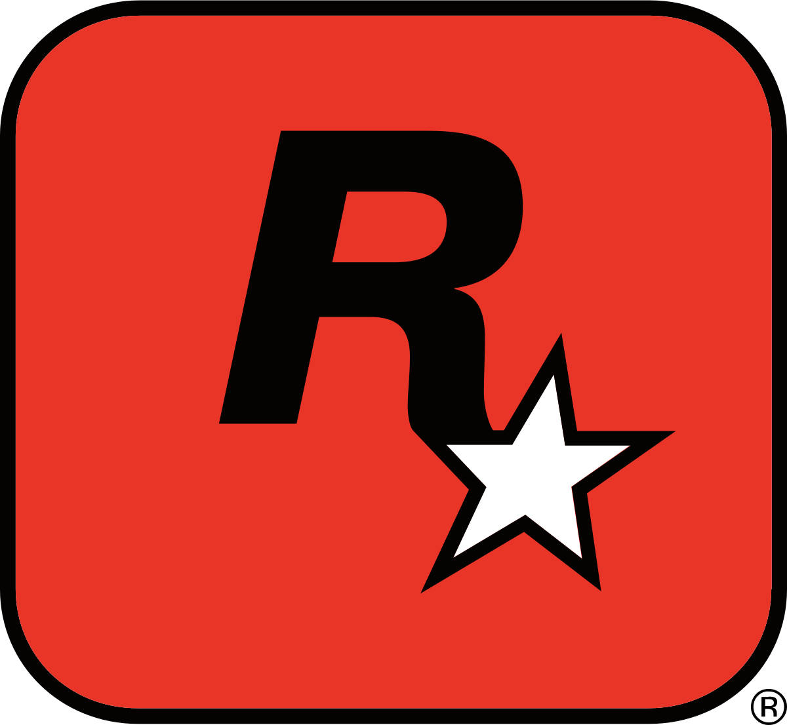

Intro
11 april 2000 is het font Kimberley gecreëerd die veel inspiraties neemt uit corporate logos uit de jaren zeventig, volgens de Typodermic font foundry geeft Kimberley een industriële, geometrische en futuristische gevoel wat "Je boodschap naar de voorgrond van het moderne tijdperk brengt".
Los van het moderne en industriële is het ook het doel van Kimberley om een retro gevoel naar voren te brengen bij potentiële gebruikers.
Kimberley is ontworpen om te gebruiken in een desktop omgeving en werkt daarom het best met de volgende digitale branches: grafisch design, reclame, webdesign, ontwikkeling van mobiele apps en zelfs games.
Ray Larabie is de typograaf die het font heeft gerealiseerd die nog een aantal grote projecten op zijn naam heeft staan wat in de volgende hoofdstukken aan bod zal komen.
Ray Larabie
Ray Larabie is een Canadese typografische ontwerper die zich voornamelijk specialiseert in fonts die
bedoeld zijn voor gebruik op desktops,
maar ook voor grafische ontwerpers. In 1996 is Larabie begonnen met de uitgave van zijn eigen fonts die
hij onder het freeware norm via het web uitbracht onder zijn onafhankelijke font foundry: LarabieFonts.
Tussen 1999 en 2001 heeft Larabie gewerkt bij Rockstar Toronto als designer en programmeur. Hier heeft
hij gewerkt aan de designs van de voertuigen van Grand Theft Auto: London 1961 & Grand Theft Auto:
London 1969. Los van de GTA series heeft Larabie ook gewerkt aan de Max Payne series van Rockstar.

In de periode dat Larabie bij Rockstar heeft gewerkt heeft hij ook een van de meest iconische logo's
gecreeerd. Namelijk: De klassieke Grand Theft Auto logo!
Het font dat Larabie heeft gebruikt is gebaseerd door een font uit de jaren zeventig, namelijk: Pinto
Flare. Pinto Flare werd gebruikt voor het logo van een game gameshow: The Price is Right. Het font
gebruikt voor GTA heet dan ook Pricedown!
En Larabie heeft dat als basis gebruikt voor het logo van de gameseries Grand Theft Auto.
Aan het einde van 2001 vond Larabie het goed geweest bij Rockstar en is zich gaan focussen op fulltime
typografische design, hij startte typodermic fonts waar hij nu nog steeds creatief te werk gaat met het
ontwerpen van fonts in zijn studio in Japan. Typodermic fonts heeft op het moment meer dan 500 typefaces
in haar bibliotheek staan,
die variëren tussen klassieke vintage fonts tot aan futuristische fonts. Al met al is het doel van
typodermic font foundry om te groeien en evolueren in het ontwerpen van unieke en innovatieve fonts.

In 2020 Heeft Larabie kwam Larabie tot de conclusie dat alle fonts die hij onder LarabieFonts
publiceerde geen commerciële waarde meer hadden en zette hij alles in het publieke domein, waar
geen intellectuele eigendomsrecht een rol speelt. Het is dus echt gratis en je kan er mee doen wat je
wil
En dat heeft altijd neemt altijd een vorm van controverse mee als je de naam Ray Larabie hoort.
Extra feitje: Een andere game series gebruikt ook een van Larabies fonts, namelijk: de Mass Effect
series.
Geschiedenis
Kimberley in de basics is een Sans Serif font daarom leek het mij ook nog leuk om in de geschiedenis van
Sans Serif te duiken!
Sans-serif-lettertypen hebben doorgaans minder variatie in lijnbreedte dan serif-lettertypen. Ze worden
vaak gebruikt om eenvoud en moderniteit of minimalisme uit te drukken.
Voor typeclassificatie worden schreefloze ontwerpen gewoonlijk onderverdeeld in deze brede groepen:
grotesk en neo-grotesk, geometrisch en humaninstisch.
Het sans serif font is langzaam begonnen met zijn ontwikkeling in de 18e eeuw, maar werd nog niet breed
gebruikt.
In 1816 heeft William Caslon de 4e een sans serif gecreeerd genaamd: Two Lines English Egyptian, die
aangevraagd werd door een client.
De Figgins foundry in londen heeft in 1830 een nieuwe sans serif gepubliceerd, die voornamelijk gebruikt
werd voor advertenties en kopstukken.
De font was gecondenseerd en vet, wat als resultaat de aandacht trok van iedereen die er naar keek.
 "When in doubt, use Caslon" -William Caslon
"When in doubt, use Caslon" -William Caslon
Tijdens het hoogtepunt van het modernistische tijdperk (20s - 70s), zijn er een van de meest populaire
sans serifs gecreeerd namelijk:
Futura, een geometrische sans, Helvetica en Univers een neo-grotesque sans; en als laatst Frutiger, een
humanist sans.
Moderne omgeving
Clean en krachtig. Van de belangrijkste lettertypes is de sans serif lettertype het meest gebruikt en
het meest veelzijdig.
In de digitale wereld is sans serif lettertypes het favoriete lettertype van duizenden merken
wereldwijd, dankzij hun helderheid, leesbaarheid en eenvoud.
Moderne merken hebben tegenwoordig minder tijd dan ooit om contact te maken met hun publiek en proberen
daarom hun boodschappen zo aantrekkelijk, toegankelijk en opvallend mogelijk te maken.
Met een overvloed aan marketingboodschappen krijgen mensen wat ze interessant vinden te zien. En
negeren ze merken tenzij ze persoonlijk betrokken zijn bij de boodschap.
Mijn Poster
Voor de poster opdracht heb ik een poster gemaakt en in plaats van een vier letter woord heb ik gekozen voor een vijf letter woord: Retro. En ben hier gaan experimenteren met de whitespace om de letter "e" tussen de overige letters te verstoppen.
Karakters
Aa
Bb
Cc
Dd
Ee
Ff
Gg
Hh
Ii
Jj
Kk
Ll
Mc
Nn
Oo
Pp
Qq
Rr
Ss
Tt
Uu
Vv
Ww
Xx
Yy
Zz
0
1
2
3
4
5
6
7
8
9